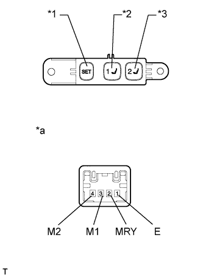
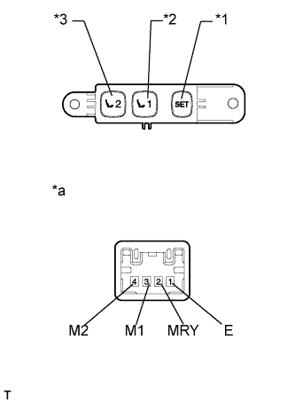

ПЕРЕКЛЮЧАТЕЛЬ ЗАПОМИНАЮЩЕГО УСТРОЙСТВА СИДЕНЬЯ > ПРОВЕРКА |
| 1. ПРОВЕРЬТЕ ПЕРЕКЛЮЧАТЕЛЬ ЗАПОМИНАЮЩЕГО УСТРОЙСТВА СИДЕНЬЯ (для моделей с левосторонним рулевым управлением) |
|  |
Измерьте сопротивление в соответствии со значениями, приведенными в таблице ниже.
| Контакты для подключения диагностического прибора | Положение переключателя | Заданные условия |
| 3 (M1) - 1 (E) | Нажат переключатель 1 | Менее 1 Ом |
| 4 (M2) - 1 (E) | Нажат переключатель 2 | |
| 2 (MRY) - 1 (E) | Переключатель SET нажат |
| *1 | Переключатель SET |
| *2 | Переключатель 1 |
| *3 | Переключатель 2 |
| *a | Устройство с неподсоединенным жгутом проводов (переключатель запоминающего устройства сиденья) |
| 2. ПРОВЕРЬТЕ ПЕРЕКЛЮЧАТЕЛЬ ЗАПОМИНАЮЩЕГО УСТРОЙСТВА СИДЕНЬЯ (для моделей с правосторонним рулевым управлением) |
|  |
Измерьте сопротивление в соответствии со значениями, приведенными в таблице ниже.
| Контакты для подключения диагностического прибора | Положение переключателя | Заданные условия |
| 3 (M1) - 1 (E) | Нажат переключатель 1 | Менее 1 Ом |
| 4 (M2) - 1 (E) | Нажат переключатель 2 | |
| 2 (MRY) - 1 (E) | Переключатель SET нажат |
| *1 | Переключатель SET |
| *2 | Переключатель 1 |
| *3 | Переключатель 2 |
| *a | Устройство с неподсоединенным жгутом проводов (переключатель запоминающего устройства сиденья) |